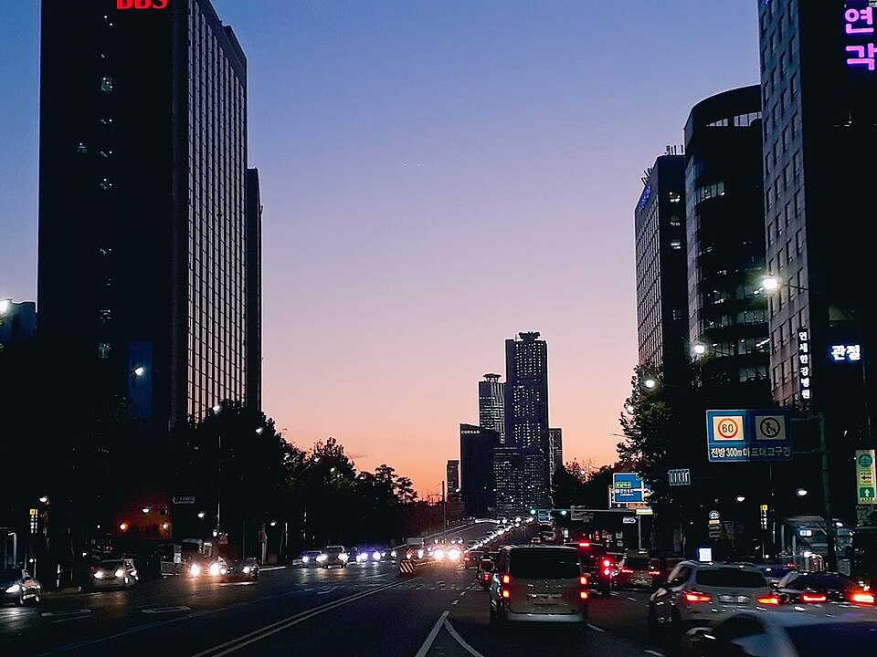

마포 검정고시 — 학교를 그만둔 뒤 첫 석 달을 어떻게 쓸까

학교를 그만두면 가장 먼저 찾아오는 건 홀가분함이 아니라 비어 버린 시간입니다. 아침에 일어날 이유가 없어지고, 하루가 통째로 손에 쥐어지는데 그걸 어떻게 써야 하는지는 아무도 알려 주지 않습니다. 마포 검정고시를 자퇴 직후에 시작하는 학생들과 상담하면서 가장 자주 나누는 이야기를 정리했습니다.
첫 달은 공부보다 생활 시간부터 되돌립니다
자퇴 후 한두 달 사이에 거의 예외 없이 밤낮이 뒤집힙니다. 새벽에 자고 오후에 일어나는 생활이 자리 잡으면, 아무리 좋은 계획을 세워도 실행되는 날이 손에 꼽힙니다. 그래서 처음 목표는 진도가 아니라 기상 시간 하나입니다.
거창하게 잡지 않아도 됩니다. "매일 오전 중에는 일어난다" 정도로 시작해서, 일어나자마자 30분만 책을 보는 식으로 붙여 나가는 편이 오래 갑니다. 하루 열 시간 계획표를 짜 놓고 이틀 만에 접는 것보다, 30분을 석 달 동안 지키는 쪽이 결과적으로 훨씬 멀리 갑니다.
과목은 한 번에 다 붙잡지 않습니다
검정고시는 과목당 60점을 넘으면 그 과목이 합격으로 남는 시험입니다. 한 번에 전 과목을 다 맞춰야 하는 구조가 아니라, 나눠서 쌓아 갈 수 있습니다. 이 점이 자퇴 직후 학생에게 특히 중요합니다. 전 과목을 동시에 펼치면 어느 것도 끝이 안 보여서 금방 지치기 때문입니다.
그래서 초반에는 암기로 점수가 빨리 올라오는 과목과 시간이 필요한 과목을 구분해 시작합니다. 사회·한국사처럼 읽고 정리하면 점수가 붙는 과목에서 먼저 합격선을 확보해 두면, 남은 기간을 수학·영어에 집중해 쓸 수 있습니다. 순서만 바꿔도 체감 난도가 크게 달라집니다.
혼자 공부가 무너지는 지점은 정해져 있습니다
인강이나 교재로 혼자 시작한 학생들이 멈추는 자리는 대체로 비슷합니다. 모르는 것을 물어볼 곳이 없을 때입니다. 한 문제에서 막히면 그날 공부가 거기서 끝나고, 그런 날이 며칠 쌓이면 책을 아예 덮게 됩니다.
또 하나는 지금 속도가 맞는지 판단이 안 되는 것입니다. 학교에 다니면 시험과 성적으로 위치가 보이는데, 혼자 하면 그 기준이 사라집니다. 잘하고 있는데도 불안해서 그만두는 경우가 생각보다 많습니다. 그래서 진도를 옆에서 확인해 주는 사람이 있는 것만으로도 완주 확률이 달라집니다.
학교를 안 다니는 시간은 손해가 아닙니다
자퇴를 결정한 뒤 가장 많이 듣는 걱정이 "또래보다 늦어지는 것"입니다. 그런데 검정고시로 학력을 마치면 같은 나이에 오히려 시간이 남는 경우도 적지 않습니다. 남는 시간을 대입 준비나 자격증, 하고 싶던 일에 쓸 수 있기 때문입니다.
중요한 건 그 시간을 어디에 둘지 정해 두는 것입니다. 목표가 흐릿한 상태로 몇 달을 보내면 늦어지는 게 맞지만, 끝나는 날을 정해 두고 역으로 계획을 세우면 오히려 앞당겨집니다. 학교 밖에 있는 기간 자체가 문제인 게 아닙니다.
마포에서 이렇게 함께합니다
저희는 1:1 맞춤 과외라 진도를 학생 한 명의 속도에 맞춥니다. 중간에 빠진 학년이 있으면 그 부분부터 되짚고 시작해도 되고, 그걸 부끄러워할 필요도 없습니다. 마포구와 인근 지역은 방문 수업이 가능하고, 생활 시간을 바꾸는 중이거나 집 밖으로 나가는 게 부담스러운 시기라면 화상(줌) 수업으로 집에서 그대로 진행합니다. 보호자 상담도 따로 받으실 수 있습니다.